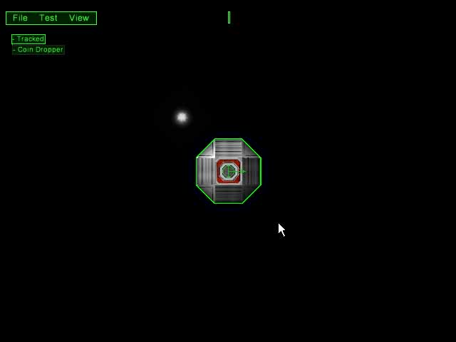

Ultra Assault Alien Editor Reference
This document is designed as a reference guide while using the editor. If you
are new to the editor, it is suggested that you complete the tutorials before using this document.
Disclaimer of warranty
THIS SOFTWARE AND THE ACCOMPANYING FILES ARE SOLD 'AS IS' AND WITHOUT WARRANTIES
AS TO PERFORMANCE OR MERCHANTABILITY OR ANY OTHER WARRANTIES WHETHER EXPRESSED
OR IMPLIED. NO WARRANTY OF FITNESS FOR A PARTICULAR PURPOSE IS OFFERED.
The user must assume the entire risk of using the program. ANY LIABILITY OF THE
SELLER WILL BE LIMITED EXCLUSIVELY TO PRODUCT REPLACEMENT OR REFUND OF PURCHASE PRICE.
Support
Please note that support for the editor cannot be provided by SmallRockets. If
you have problems or questions regarding the editor, you can use the Ultra Assault
forum on www.smallrockets.com.
Keys
Tilda - (~) switches between the editor and the game
TAB - key toggles between Alien editor and Level editor
Shift - If held down while moving the mouse to the extents of the screen reveals hidden areas, which can be used to place aliens.
F1-F7 - Cheat options - press these to activate ship power-ups in the game, useful for testing.
F9 - Toggles track visibility while the game is running
F10 - Stops next level from loading when you hit end (top) of current level
F11 - Toggles player invincibility on/off
F12 - Stops screen from scrolling; toggles on/off
Alien editor

The Alien Editor is used exclusively to create and edit aliens for the game. This includes setting elements such as how they explode, how many points are received for killing them etc.
File Menu
All options can be accessed by selecting File from the menu bar.
New
Creates a new alien. When selected the 'Select base clump' dialog will appear. Select a 3D model from the list (or type its name into the box below) to form the basis of your alien (a preview of the object will be shown behind the dialog). Select OK to use the model, or select Cancel to create an alien with no object as its basis.
NB: This will immediately erase all working data with no prompt - please ensure you have saved any work before selecting this.
Load
Loads an existing alien. When selected the 'Load an alien' dialog will appear. Select an alien from the list or type its name in the box below and select OK. Select Cancel to leave the current alien loaded.
NB: Loading an alien will immediately erase all working data with no prompt - please ensure you have saved any work before selecting this.
Save
Saves the current alien. If the alien has not been previously saved, this function behaves identically to Save As... (see below). Saving will overwrite any previously saved data for this alien.
Save As...
Save the current alien as a named file. When selected the 'Save an alien' dialog will appear. Select an alien from the list or type a name in the box below to save your alien. Please note that any existing alien data will be overwritten if you choose an alien already in the list. If this is the first time you are saving a new alien, give it a name in the box below the list and select OK. Select Cancel to return to the editor without saving.
Edit Level
Selecting this causes the editor to switch to Level editing mode. Identical to pressing the TAB key.
Resume Playing
Switches from the editor into the game mode, at the place the level editor is currently set to. Identical to pressing the '`' key.
NB: Alien changes which have not been saved will not appear in the game mode.
Exit Game
Returns to the Ultra Assault main menu.
NB: Selecting this will cause all unsaved data to be lost without a prompt.
Test Menu
All options can be accessed by selecting Test from the menu bar.
Static
Selecting this sets the editor to display the alien in non-functioning mode - guns do not fire, animation does not play etc.
Run
Opposite of the static option above. Useful for quickly testing aliens so you can see their behaviour without having to place them in a level.
View Menu
All options can be accessed by selecting View from the menu bar.
Actual Size
Sets the editor to display the alien at the size it will appear in the game.
Zoom In
Moves the camera closer to the alien currently being edited.
Zoom Out
Moves the camera further away from alien currently being edited.
Actual Size
Sets the editor to display the alien at the size it will appear in the game.
Alien Construction
Aliens are built from component parts which are 'attached' to the root element. The root element controls the type of alien, while the components provide guns, models, explosions etc.
When you create a new alien, a root element will be created. The process for modifying how any element works as outlined below.
Elements are displayed on the left hand side of the screen as a hierarchical list. you can move the elements around this list by dragging them. Elements also appear in iconic form in the main alien area.
Select an element, then right click to open the element's menu. The options are as follows:
Properties
Allows you to alter properties of any given element. The Properties dialog will appear. For information on the meanings of properties on different elements, see the element reference below.
Clump
Changes an elements 3D model. The Select clump dialog will appear. Select a model from the list or type its name in the box below (a preview will be shown). Then click OK to set the model, or Cancel to return to the editor.
NB: The clump can be set manually through the element properties option.
Zero Offset
Moves the current element to the dead centre of the alien.
Unified
Determines whether the current element is unified with its parent (identified by a vertical line joining the elements). Unified elements display with blue outlines. Unified elements have certain behviours - for example, if an element is shot by the player and is unified to another element, both parts will receive damage.
Attach >>
Attaches an element to the currently selected element. Select the element you wish to attach. See the element reference for more details.
Convert >>
Converts the currently selected element to the element you select. See the element reference for more details.
NB: Some properties will reset when an element is converted.
Health to all
This option sets the health values of all elements to that of the currently selected element. This is often used for complex aliens with many components, and saves you the task of setting the health values manually.
Duplicate
Creates a copy of the currently selected element. The new element will be place at the same level of the hierarchy as the one it was duplicated from.
Delete
Deletes the currently selected element and any child components.
Remove component
Deletes the currently selected element, but leaves child components behind. Identical to pressing the Delete / DEL key.
Alien Elements
See above for reference on attaching and deleting components. Below is a full list of components and their properties.
General properties
All elements have the following properties. Various elements use different properties to mean different things, however the following are all standardised:
Version
Automated entry used for revision tracking. Do not change this value manually.
Type
Defines the ID for the particular element. Do not change this value manually.
Unified
Sets whether the current component is unified to its parent component. Unified components act together - if one is damaged this is passed on to unified elements etc. 1 means unified, 0 means not.
ChildrenShield
Determines whether the element is 'shielded' by its children components. If this is set to 1, the player must destroy all visible child components before this element takes any damage.
ChildrenNeeded
An element with this value set to 1 will die if all its child components are destroyed. Useful for multi-part bosses which are only killed when all their elements are destroyed.
ShipHitter
Determines whether the player will be killed if they collide with this element in the game. If an element is a ShipHitter and the alien is above 5 units high in the level, it will kill the player on collision. Set to 1 to activate this property.
ShipHitAlways
Similar to ShipHitter, but removes the height requirement. If the player collides with an element which has ShipHitAlways set to 1, they will be killed.
AttachTheta
This is used to track the positional relationship between the element and its parent. Do not change this value manually.
AttachRadius
This is used to track the positional relationship between the element and its parent. Do not change this value manually.
AttachHeight
Determines the height of the element in relation to its parent. Can be negative as well as positive to make the element lower than its parent. All heights are relative to the placing of the alien in the level, so an alien at 100 in the level will have an element at 110 if it has an AttachHeight of 10.
Angle
The orientation of the element. A value from 0-360 is valid. Generally only set this manually for precision - it is typically easier to manually rotate the element in the main editor view.
Speed
Defines the overall speed of the alien, but can vary depending on the type (see Root Elements for more details).
Force
Applies to guns only, and determines the speed of the bullets that are fired from the gun.
Distance
Applies to linear elements, and determines how far the element can travel along the linear (see Linear element below).
Accuracy
Applies to guns, and determines how accurate they are. The lower the number, the less range there is which will cause them to fire (shown in the editor as a cone). The range only applies to the position of the player.
Health
Sets the amount of health the element has. When its health reaches zero the element is destroyed - if it has any attached explosions these will be displayed. For reference, a value of below 50 will generally make the element die after being hit by a single bullet.
Spawns
Used for spawn guns, as well as aliens which can morph. On a spawn gun, this property determines which alien will be fired by the gun itself. If this value is set on a root element, it means the alien will 'turn into' the alien set when it morphs. Also, if this value is set and a MorphTime value is given, the alien will change into the new one after the time has elapsed.
The only valid entry for this property is the name of an alien.
SpawnsOnDeath
This property determines which alien the current one will become when it is destroyed. For this to work both the current alien and the next one must have a BossStartHealth value that is higher than the health of the alien itself (see BossStartHealth below).
The only valid entry for this property is the name of an alien.
ActionSound
Sets the sound that will play when this element is active. On the root element, this sound plays like an engine (all the time the alien is present in a level). On a gun, the sound is played each time the gun fires. See individual elements for more on this property.
Clump
The name of the 3D model that this element uses. If this property is empty, the element has no visible element. See individual elements for more on this property.
CollisionRadius
Do not alter this value.
BossStartHealth
This value is used to allow an alien to consist of several different stages, and sets how much health all the aliens have when they act as one. For example, if you have two aliens, one of which uses the SpawnOnDeath property to spawn the other, and both have a health of 6000 then this value should be set to 12000. This is more complex than some other functionality and if you are finding problems with 'multi-stage' aliens it is worth checking that all the aliens have the same BossStartHealth value.
MorphTime
Determines the amount of time in seconds before the current alien morphs into the alien determined by the Spawns property. If set to -1 (default) the alien will not morph. See the BossStartHealth element entry for more on creating multi-stage aliens.
DamageParent
Determines whether the current element will damage its parent element when it is hit by the player. This is similar to unified, but ensures elements on the same level (children) do not damage each other when hit.
CollideAliensDamage
This property is used to create aliens which can damage other aliens, and the value determines how much damage is done each frame. In general you should not need to use this property. Default is 0 (ie disabled).
Shootable
Determines whether the element can be shot by the player. By default, it is set to 1 (shootable). If you set it to 0 you can have parts of aliens which cannot be shot.
SmartBombImmune
If set to 1, this prevents the player from damaging the element with a smart bomb during the game. This can be useful on aliens which naturally prevent the player from shooting them (using shields for example - see below) but which can be damaged by smart bombs.
HealthFactorImmune
If set to 1, this element will ignore Ultra Assault's difficulty settings - if the game difficulty automatically increases, this element will still behave as if the settings were set to medium. Use this to ensure Score Attack is always completable (Score Attack automatically increases the health settings if the player completes all six levels). Set to 0 by default (not immune).
DontRenderDamage
Set this value to 1 to disable the visual effect that occurs when an element is shot.
FireOffScreen
Only applies to guns. By default guns do not fire when they are not visible to the player to make the game fairer, but in some cases it is useful to override this behaviour. Set this value to 1 and the gun will fire at all times based on its settings, visible or not.
Root elements
These elements are special - only the root (the first) element may be set to one of these elements, and it defines the basic behaviour of the alien.
Tracked
Aliens which are tracked move according to tracks in the level editor. Their orientation and movement speed are all determined by the track itself. This is the default type.
Track Decoupled
Similar to Tracked aliens, this element type has more control over its speed along tracks - using the track speed as a guide but not as an absolute speed. Track Decoupled aliens do not accelerate and decelerate in the same way as Tracked ones, but travel at a more constant speed.
Relevant properties to change: Speed - determines base speed of movement.
Tracked / Screen
This element is the same as a Tracked alien with one key difference - rather than taking the track as an absolute position, it uses it as a movement guide and scrolls along with the player. So a Tracked / Screen alien following a horizontal path would actually move diagonally if the screen was scrolling.
NB: Using Tracked / Screen you must create a Static element which will form the basis of your alien, otherwise it will not appear. See Static below.
Track Decoupled / Screen
Identical to Tracked / Screen except the track works as with Track decoupled aliens. See Tracked / Screen for more on this type of element.
NB: Using Tracked / Screen you must create a Static element which will form the basis of your alien, otherwise it will not appear. See Static below.
Relevant properties to change:
Speed - determines base speed of movement.
Door
This special type of alien can be used to play an animation when aliens pass through it, such as the opening and closing of a door as they emerge. If a door alien is placed on a track point, it will play its animation every time an alien passes that point.
AI >> Follow Ship
This behaviour makes the alien 'home in' on the player as it moves around the screen - AI aliens therefore don't need tracks to move, they do it on their own.
Relevant properties to change:
Speed - determines the overall speed of movement
Acceleration - determines how fast the alien can change direction
GravityX and Gravity Y - set whether the alien should 'drift' in a particular direction
UpdateAngle - If set to 1, the alien will orient to the direction it is travelling - set to 0 to fix the angle. Some AI situations can make an alien look odd if UpdateAngle is enabled.
Damping - this is used to stop the alien from rapidly switching back and forth. Generally you shouldn't need to change this value.
For more information on this type, see the alien aiplane1
AI >> Aim Start Ship
Very similar to Follow Ship, except these aliens dont 'home' in, they merely head in the direction of the player at the time they are spawned. The settings are identical to Follow Ship.
Gun elements
There are four types of gun: Arc, Green, Laser and Spawn. Guns share some basic properties which are outlined here:
Speed
Determines how often (in seconds) the gun will fire. If a gun has a speed of 0.5 it will fire every half a second.
NB: Speed determines how often it can fire, but does not override other settings such as accuracy.
Force
The speed bullets fired from the gun travel at (or in the case of Spawn guns, the speed the aliens that are spawned travel at).
Accuracy
Determines how accurate a gun is. The lower the number, the less range there is which will cause them to fire (shown in the editor as a cone). The range only applies to the position of the player.
Spawns
If the gun is a Spawn gun, this determines which alien type will be fired by it.
FireOffScreen
If set to 1, the gun will fire regardless of whether it is visible to the player. By default (0), guns do not fire if off the screen.
AlwaysFire
If set to 1, the gun will fire regardless of where the player is, overriding its accuracy setting. The speed setting will still control the regularity of its firing pattern however. The default is 0, where the gun follows the accuracy setting.
PauseTime / FireTime
These values are linked. They are used to create more complex firing patterns in tandem with AlwaysFire. FireTime is the amount of time (in seconds) the gun should fire for. PauseTime is how long it should pause for after firing. So if a gun has a FireTime of 1 and a PauseTime of 2, it will fire for 1 second, every 2 seconds.
ActivationDelay
This determines the amount of time (in seconds) before a gun will become active when the alien is spawned. This can be used to create aliens which do not attack the player immediately.
DisplayCorona
The default value (1) makes the gun glow red as it prepares to fire. Generally this is a useful clue to the player. Set this to 0 if you wish to turn the corona glow off.
DifficultySettingImmune
If set to 1, this element will ignore Ultra Assault's difficulty settings - if the game difficulty automatically increases, this element will still behave as if the settings were set to medium. Use this to ensure Score Attack is always completable (Score Attack automatically increases the difficulty settings if the player completes all six levels). Set to 0 by default (not immune).
Other elements
Angle Decoupler
This element allows you to have elements which do not orient to the track the alien is on. Normally the alien will rotate as it moves along a track to match the tracks orientation. Angle decoupler elements always keep their orientation the same.
This element has no special properties.
Boss
This element takes control of the scrolling in the game. If an alien has a boss, the scrolling is matched to keep the boss element in the centre of the screen, speeding up and slowing down as necessary.
This element has no special properties.
End Level
This element is used to allow the player to complete levels by destroying an alien (a boss in all the Ultra Assault levels). Any alien with an End Level element will cause the Level to complete when it is destroyed.
The only property relevant is the Speed property, which determines the amount of time (in seconds) the game will continue to display after the boss is destroyed.
Brush
This element causes ripples to be generated when the alien moves over tiles in the level which are set to be water. The Distance property determines how often ripples are generated.
Checkpoint Advance
This is a legacy element and should not be used.
Coin Dropper
All aliens of any type have a coin dropper, which defines the position relative to the alien where power-ups will be spawned from.
This element has no special properties.
Corona
Coronas are lights which are configurable.
The relevant properties are:
Speed - sets the pulse rate of the corona. For example, setting it to 1 will make it pulse to its most intense setting every second.
Force - determines the colour and intensity of the corona. Try setting this to different numbers to make different colours.
Distance - Sets the size of the corona.
Credit
Determines how many points the player will score when the element this credit is attached to is destroyed. The only property specific to Credit is Force which should be set to the score value.
Explosion
When an element is destroyed, if it has explosions attached to it these will appear in the game.
The relevant properties are:
Speed - the delay (in seconds) between the element dying and the explosion appearing.
Force - the magnitude of the explosion.
Invisible
This element can no longer be used.
Lights Out
This element forces all lights in the level to be turned off when it is present.
This element has no special properties.
Linear
Linear elements can travel along a fixed line to follow the player. In many respects their functionality is often easier to achieve using the AI alien types (see above).
Relevant properties:
Speed - determines how fast the attached elements move along the line
Force - determines how far the elements can move from the centre of the linear
Distance - gap allowed before the linear starts to home in on the player
Medic
Allows for aliens which have 'restoring' health.
Only the speed value is relevant, with positive values increasing health, negative decreasing.
Monitor
If an alien has a monitor (or multiple) attachment, when they appear on screen their health will be displayed in a health bar in the top right of the screen. The position of the monitor will also be indicated allowing for vulnerable points to be indicated to the player. If the alien has a BossStartHealth value, this will be displayed in the health bar.
This element has no special properties.
Music
Use this to change the music track. If an alien is spawned with a music element, the music will be changed to the track number set in its ActionSound parameter.
Particulator
Spawns smoke / fire particles.
It has the following properties:
Force - determines the type of particles spawned (use decimal values ie 0.1)
Speed - determines how often particles are spawned
React (Speed)
This element is legacy and should not be used.
Shield
Elements which are shields have two fundamental properties: they reflect bullets, and the player will die if there is a collision between the ship and a shield.
This element has no special properties.
Static
Static elements are simply attached 3D models, allowing for large aliens built out of a number of component parts.
This element has no special properties.
Trailer
Trailer elements 'follow' the elements they are attached to, disregarding the track the alien itself is on.
This element has no special properties.
Turret
Turrets are elements which target the player, and can have other elements such as guns attached to them.
Relevant properties are:
Speed - speed of rotation for the turret
Accuracy - the angle through which the turret can turn. If set to 360 it can turn in a full circle.
|